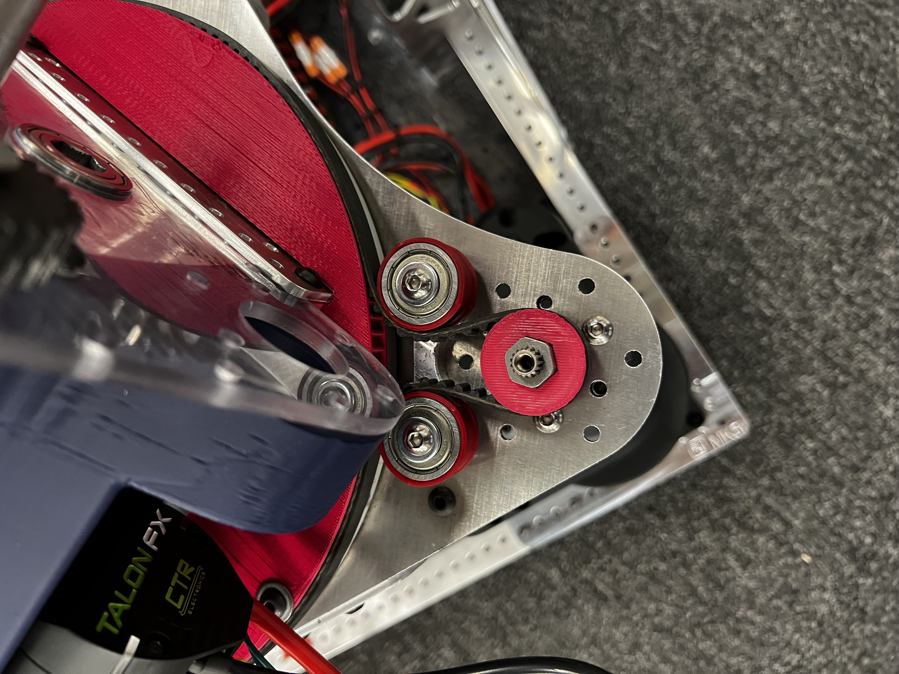
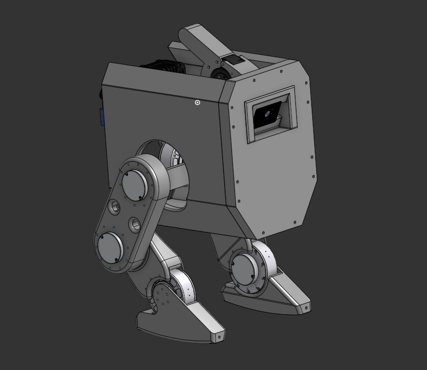
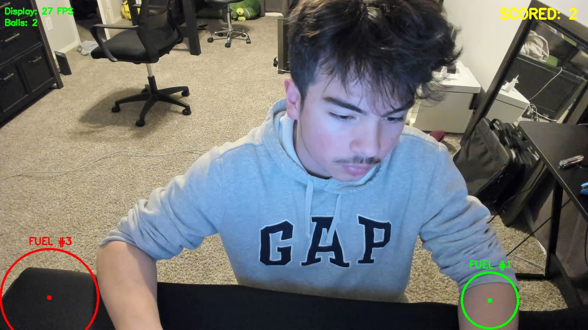

Dominic Rodriguez
Builder.
Engineer.
I build things — from desktop widgets and RL-trained robots to FRC competition tools and custom Windows utilities.

I build things — from desktop widgets and RL-trained robots to FRC competition tools and custom Windows utilities.
A glassmorphism music player that floats over your Windows desktop, showing the currently playing track from any app. Built as a native .exe using WebView2 with SMTC bindings — reads playback state from Spotify, YouTube, or anything — and renders a blurred, translucent card with album art, progress bar, and controls.
I wanted a floating music overlay that worked with any app, not just Spotify. Windows has the SMTC (System Media Transport Controls) API that exposes the "now playing" info from any app — Spotify, YouTube in Chrome, anything. The challenge was surfacing that in a real-time UI.
I tried a pure Electron approach first but it was 200 MB and felt heavy for a widget. Switched to WebView2 + C# — same HTML/CSS/JS front-end but the host is a tiny native .exe. First few builds crashed on startup because I wasn't initializing the WebView2 environment asynchronously.
Wiring the C# SMTC event handlers to fire updates into the JavaScript context was tricky. I had to marshal data across the WebView2 bridge using PostWebMessageAsString and parse JSON on the JS side. The first version had a race condition where the UI would render before the media session connected.
The frosted glass effect uses CSS backdrop-filter: blur() which only works when the window has a transparent background. Getting Win32 window transparency right without WPF took several attempts with SetLayeredWindowAttributes and DWM composition flags.
Distributing WebView2 apps requires the runtime to be installed. I bundled the Evergreen bootstrapper so it auto-installs on first run. The final .exe is under 2 MB — a fraction of the Electron equivalent.
An iOS-style stacked card widget for Windows. Cards fan out and snap with smooth physics animations in a compact 220×370 window. Part of a custom desktop widget ecosystem with a widget picker UI.
A native Windows utility that adds smooth animated minimize/restore effects to any window. Written in C# as a helper DLL with a PowerShell driver — hooks into Win32 to intercept window messages and inject custom easing curves.
Currently building a bipedal walking robot from the ground up — full mechanical design in CAD, custom electronics, and an RL-trained gait using NVIDIA Isaac Lab + Newton physics.
Real-time computer vision pipeline that detects and tracks FRC fuel balls from a live webcam feed at 27 FPS. Runs a custom-trained model to circle each detected ball, label it, and keep a live scored count — built with a capture script for training data collection and a separate inference tracker.
Real-time voice assistant with a custom vocabulary guide and local LLM integration. Transcribes speech and pipes it to a language model for conversational responses — with a configurable vocab layer for specialized terminology.

Designed a custom circuit board in KiCad — routing connectors, signal traces, and mounting holes for a multi-channel board spanning ~95mm. Exported DXF flat patterns for fabrication.
As part of FRC Team 987, I designed the 2026 game shooter mechanism and a custom 3D-printed belt tensioner — a pulley system that auto-centers the belt to prevent slipping under rapid movement. I also built physics simulators and Onshape FeatureScripts used throughout the engineering cycle.






I'm Dominic Rodriguez — I build things that sit at the intersection of hardware, simulation, and software. Whether that's training a walking robot with reinforcement learning or writing FeatureScripts that save hours of CAD work, I care most about making things that actually work.
On the software side I'm drawn to systems-level work — hooking into Windows APIs, rendering UI in WebView2, writing native utilities. On the engineering side I'm deep in mechanical design and parametric CAD.
Currently working at Limelight Vision and actively building a bipedal walking robot from the ground up — mechanical design, electronics, and RL-trained gait all in progress.